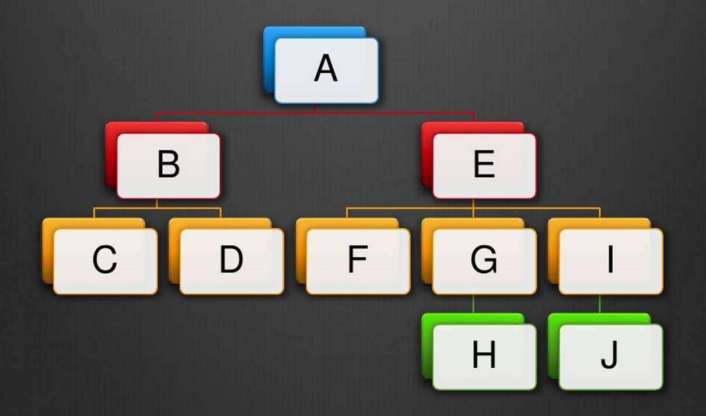
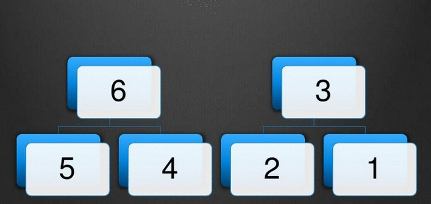

On-line lowest common ancestor (LCA) search and the on-line version of the level ancestor problem have been traditionally viewed as having O(h) solutions.
Last year, I improved both of those bounds to O(log h) while using only purely functional data structures, when I was working on another problem, and I figured I should do a write-up on how that worked, as I'm going to use some of the same componentry in future posts.
Like most of my posts of late this one will dip a little bit into how we can use this abstruse theory to get improved distribution and parallelism as well.
In future posts, I'll talk about how this can be used to derive an efficient revision control monad and I've been using the same skew binary arithmetic to derive an efficient cache-oblivious unboxable version of the venerable Data.Map.
Lowest Common Ancestor
Given a tree and two nodes in the tree, find the lowest entry in the tree that is an ancestor to both.
Consider this tree:

lca D E = A
lca F I = E
lca G H = G
lca H J = E
There has been a lot written about the version of this problem, where there tree is fixed and unchanging, but not much about it in the case where it is allowed to continue to evolve.
There are a lot of applications for LCA.
- Computing dominators in flow graphs
- Three-Way merge algorithms
- Finding common word roots/suffixes
- Range-Min Query (RMQ) problems
- Computing distances in a tree
Aho, Hopcraft and Ullman originally formulated the lowest common ancestor problem 40 years ago, back in 1973.
They provided both on-line and off-line versions of the problem, defined around two operations link and lca, but their specification has a distinctly imperative flavor.
LCA was defined in terms of two operations link x y and lca x y. link x y grafts an "unattached tree" x on as a new child of y, while lca x y computes the lowest common ancestor of x and y.
The difference betwen on-line and off-line has classically been whether the set of link and lca commands was fixed a priori.
Research has largely focused on the slightly more permissive off-line version of the problem where you are given the entire tree a priori. The original off-line version of the algorithm required time O(n log* n) for a precanned set of lca and link operations, and their on-line version required O(n log n). These have since been improved.
Off-line LCA
In general, these days if you're able to set up the tree you want in advance, and are willing to spend O(n) time preprocessing it, then you can answer subsequent lca queries on it in O(1)! However, if you make any edits, then you have to reprocess the entire tree in O(n) time. This renders these algorithms unsuitable for things like computing LCAs in version control graphs.
These algorithms are actually pretty complicated. They involve tricks like round-tripping to and from a Range-Minimum-Query (RMQ) formulation twice.
There is an excellent writeup that covers these classical techniques on this on top-coder. In the notation used there, the solution I'm going to explore is <O(1),O(log H)>, where H is the height of the tree, not the full size N that has to be used for all the other algorithms explored.
Functional LCA
Notice in Aho, Hopcraft and Ullman's specification, link doesn't return anything! It is an inherently mutation-oriented approach to the problem statement. Instead I'm going to replace link x y with cons a y, which returns a new extended version of the path y, grown downward with the new globally unique node ID a.
We could also choose to replace cons a y with a monadic grow y, which tracks some kind of variable supply internally. By using a concurrent variable supply like the one in my concurrent-supply package, we can grow the tree in parallel across multiple cores.
The Dumbest Thing That Could Work
We can define a path to be just a a list with an associated length.
type Id = Int
data Path = [Id] :# !Int
and we can build them up:
empty :: Path
empty = [] :# 0
cons :: Id -> Path -> Path
cons a (ys :# n) = (a:ys) :# (n + 1)
With that paths look like:
x = [5,4,3,2,1] :# 5
y = [6,3,2,1] :# 4
Now we can compute the lowest common ancestor of two paths by just cutting them off at the same height and marching down them in lock-step, comparing for equality as we go.
x' = [4,3,2,1] :# 4
y' = [6,3,2,1] :# 4
Then
lca x y = [3,2,1] :# 3
Scribbling that out we get this algorithm.
lca :: Path -> Path -> Path
lca (xs0 :# i) (ys0 :# j) = go k (drop (i-k) xs0) (drop (j-k) ys0) where
k = min i j
go !n xxs@(x:xs) (y:ys)
| x == y = xxs :# n
| otherwse = go (n - 1) xs ys
Already it has a number of pros and cons.
1.) It requires no preprocessing step.
2.) It is only O(1) to extend a path, and did I mention there is no recomputation necessary?
3.) There is no need to store the entire tree! You only ever have to store the paths you are actively considering. This helps with distribution and parallelization.
4.) On one hand, it is O(h) in the height h of our tree to compute and this is bad in that O(h) is a lot more than the O(1) lca calculations of the standard toolbox.
5.) On the other hand, O(h) is still often a lot less than a full O(n) recalculation required by other approaches as your tree changes. This permits the use of this algorithm when we care about on-line edits being made to the tree, and where we need to be able to roll with the punches rather than stop the world for a single calculation.
The bottleneck here is obviously the suffix extraction. It takes potentially O(h) to trim the two lists to the same length, then it takes O(h) to scan the trimmed lists in parallel.
As is usually my wont, I'll turn to Okasaki for at least part of the answer.
Types from Number Systems
One tool in the functional programming tool-box is the trick of turning a number system into a data structure.
Unary
We're actually quite familiar with one such structure:
data Nat = Zero | Succ Nat
data IdList = Nil | Cons Id IdList
Here, we can think of Nat as a unary encoding of the natural numbers. (Technically they are extended here via their one-point compactification with infinity due to laziness.)
If we augment each Succ with a piece of data, this gives us the well known list data structure.
Here the fact that we can increment a unary number in O(1) leads to the observation that we can cons onto our list in O(1) as well.
The cost of adding numbers in unary and the costs of appending lists are related as well.
The asymptotics of take and drop can be related to the complexity of calculating similar clamped operations involving min on the naturals.
Binary
It worked with unary, so we could try to do this with binary, but it wouldn't work well. We could use a bunch of arrays with sizes based on powers of 2, where each array is present or absent such that the total of all of the array sizes is our number of elements, but when we're done we'd still have to do a bunch of array merging. Incrementing our counter may cause a 'carry' that affects all O(log n) such arrays!
This leads us to search for a number system where carries lead to less work.
Skew Binary
Skew Binary is a type of "almost binary" number system, where our digits are either 0 or 1... or 2.
It differs from ternary in the value of eachdigits, and in the fact that we're only going to allow ourselves at most a single 2, and we'll use it to defeat the need for multiple carries.
In skew binary, the _n_th digit is worth 2^(k+1)-1, rather than 2^k like in binary.
This leads to the progression:
1,3,7,15,31,63,127...
rather than the binary progression so familiar to programmers.
1,2,4,8,16,32,64...
If we say the 2 can only occur as the least significant non-zero in our number, then every natural can be uniquely represented in skew binary. We'll need this uniqueness later!
n 731 n
-- --- --
0: 000 -- 0
1: 001 -- 1*1 = 1
2: 002 -- 2*1 = 2
3: 010 -- 1*3 = 3
4: 011 -- 1*3 + 1*1 = 4
5: 012 -- 1*3 + 2*1 = 5
6: 020 -- 2*3 = 6
7: 100 -- 1*7 = 7
8: 101 -- 1*7 + 1*1 = 8
9: 102 -- 1*7 + 2*1 = 9
10: 110 -- 1*7 + 1*3 = 10
11: 111 -- 1*7 + 1*3 + 1*1 = 11
12: 112 -- 1*7 + 1*3 + 2*1 = 12
13: 120 -- 1*7 + 2*3 = 13
14: 200 -- 2*7 = 14
...
If we represent a skew binary number as a linked list of digits from least to most significant, such that we just don't store the zeros and just store the number of inhabitants by storing the size we can write:
data Skew = Two !Int Skew | One !Int Skew | Zero
By inspection, incrementing the counter is an O(1) operation, (if we ignore the price of manipulating the size).
succ :: Skew -> Skew
succ (Two x (One y ys)) | x*2+1 == y = Two y ys
succ (Two x xs) = One (x*2+1) xs
succ (One 1 xs) = Two 1 xs
succ xs = One 1 xs
We can greatly simplify this by just saying that a 'Two' is really two ones of the same size in a list. Due to our constraints, such a Two will only occur at the front of the list.
data Skew = One !Int Skew | Zero
Then we can observe that Skew is just [Int].
type Skew = [Int]
succ :: Skew -> Skew
succ (x:y:zs) | x == y = x+y+1 : zs
succ xs = 1:xs
So what happens when we turn this into a data structure?
Now all we want to do is replace our digits with a data structure that has the same size. Our digits are sized like: 1,3,7,15... Those look familiar. That is the number of children in complete binary trees of a heights 1,2,3,4...
If only we had some operation that took one element, and two complete binary trees and gave us a new binary tree, like making that element the new root...
We could get fancy and enforce the completeness of these trees bottom up or top down with invariants, but I leave that to you to do efficiently.
We'll need a size as well, so let's shoehorn that in too.
data Tree
= Tip
| Bin !Int !Id Tree Tree
size :: Tree -> Int
size (Tip _) = 1
size (Bin n _ _ _) = n
type Path = [Tree]
Corresponding to succ, we could now implement cons.
cons :: Id -> Path -> Path
cons a (x:y:zs) | size x == size y = Bin (size x*2+1) a x y : zs
cons a xs = Tip a : xs
All we've done is maintain the invariant that a "digit" worth n is associated with n entries worth of data.
With that cons for our paths is now O(1). You can similarly generate pred and tail.
Cleaning Up
For sake of convenience I'm going to want to know the total number of elements in the whole list of trees. This is technically a matter of convenience rather than necessity, as it doesn't affect us asymptotically, so let's go back and redefine Path to be a real data type. While we're at it, we can switch the size annotation to the list node as well, so we don't have to store it recursively in the trees. Finally, I'm going to fix the type of the IDs to Int.
With those gymnastics out of the way we're left with:
data Path
= Nil
| Cons !Int -- `n` entries in this path
!Int -- `w` entries in this particular tree
Tree -- a complete tree with @w@ elements
Path
deriving (Show, Read)
Now our Trees are storing an Int key / a value pair rather than a size and a value:
data Tree
= Bin !Id Tree Tree
| Tip !Id
deriving (Show, Read)
And with a for-internal-use-only helper:
consT :: Int -> Tree -> Path -> Path
consT w t ts = Cons (w + size ts) w t ts
we can define cons and uncons:
cons :: Id -> Path -> Path
cons k (Cons n w t (Cons _ w' t2 ts))
| w == w' = Cons (n + 1) (2 * w + 1) (Bin k t t2) ts
cons k ts = Cons (size ts + 1) 1 (Tip k) ts
uncons :: Path -> Maybe (Id, Path)
uncons Nil = Nothing
uncons (Cons _ _ (Tip k) ts) = Just (k, ts)
uncons (Cons _ w (Bin k l r) ts) = Just (k, consT w2 l (consT w2 r ts))
where w2 = div w 2
If you prefer, you can go implement cons/uncons using the _Cons Prism from lens instead.
This gives us a pretty basic "skew binary random access list" of identifiers.
Keep On Trimming
All we need to do is address the O(h) cost of trimming and the O(h) cost of scanning.
Rather than talk about dropping, it is easier to switch to tracking how much we want to keep. The transformation to the original list code is trivial.
keep k (xs :# n) = drop (n-k) xs :# max 0 (n-k)
So, now the issue becomes how to define a faster keep to deal with the trimming.
To define a faster keep, we need to work smarter. We have at most O(log h) trees in our skew binary random access list.
So we can run along our list of trees until we find the tree we need to cut up to get a skew binary random access list of the right size.
When we're done, we can just cut off the tops of our tree to keep the right number of entries.
Consider what happens when we have the Path of identifiers [6,5,4,3,2,1] and we want to keep only the top 2.
Recall our digits are worth 1,3,7,15..., so since 6 = 2*3, our path would be represented by two complete binary trees each with three elements in them.
Running down the spine: we see Cons 6 3 tree1 (Cons 3 1 tree2 Nil), so we can just drop the first tree wholesale: (Cons 3 1 tree2 Nil), so we know we're going to cut up tree2 to get our new list.

If we had a bigger structure we'd be getting out new complete trees to cons onto the rest of the list... but recall, later trees are always bigger than ones that came before with the possible exception of the first two trees, and if we cut off the top of a tree, we're going to wind up smaller still.
Turning that into code:
keep :: Int -> Path -> Path
keep _ Nil = Nil
keep k xs@(Cons n w t ts)
| k >= n = xs
| otherwise = case compare k (n - w) of
GT -> keepT (k - n + w) w t ts
EQ -> ts
LT -> keep k ts
keepT :: Int -> Int -> Tree -> Path -> Path
keepT n w (Bin _ l r) ts = case compare n w2 of
LT -> keepT n w2 r ts
EQ -> consT w2 r ts
GT | n == w - 1 -> consT w2 l (consT w2 r ts)
| otherwise -> keepT (n - w2) w2 l (consT w2 r ts)
where w2 = div w 2
keepT _ _ _ ts = ts
keepT is used when we know we're taking at least one element off the top of a Tree, and that that tree is at most as tall as the shortest tree in a Path, AND we can know that the path has at most one element of its shorest length, so after we cut off the top, we can at most produce 2 nodes of the same size, but they'll be shorter than everything in the Path.
Putting all of that together, we can prove keep takes O(log h), but I leave that to you to do to convince yourself.
The notion that keep or drop can be implemented in logarithmic time in a skew binary random access list had previously been unpublished.
This is sufficient to yield an improvement in the known asymptotics for the on-line version of the level ancestor problem. Just take your Path and keep how ever many levels you want!
Observations
To implement a faster trim we need a few observations on the nature of a skew binary random access list.
Comparing Node IDs
We can check to see if two paths have the same head or are both empty in O(1). We'll use (==) for this under the assumption that we mentioned early on that all identifiers that we use in the paths will be globally unique.
instance Eq Path where
Nil == Nil = True
Cons _ _ s _ == Cons _ _ t _ = s == t
instance Eq Tree where
Tip a == Tip b = a == b
Bin a _ _ == Bin b _ _ = a == b
_ == _ = False
These are each O(1) to compute.
Monotonicity
We can modify the algorithm for keep to work with any monotone predicate that transitions from False to True at most once during the walk up the path to the root.
As with keep, the resulting algorithm will take at most O(log h) applications of the predicate and can run in O(log h) time if the predicate is O(1).
Unique Representation
There are many number systems we could have chosen to use for our paths. One of the nice properties of skew binary that I alluded to earlier is that there is precisely one representation for each natural number in skew binary. Other number systems often give up this property to get other properties.
Let's use it.
By knowing that we have a unique representation for a given number in skew binary, we can know that our skew binary random access list has a unique shape for a given number of entries!
This means that we can walk the spine of two random access lists of the same length at the same time in lock-step, and we'll visit the same number of trees, of the exact same size.
So, if we go back to keep, we can modify the algorithm to work with a pair of paths, computing (==) which is O(1). The fact that our identifiers are globally unique mean that once we find a match, all the parents from then on up the tree should also match.
We effectively gallop along the spines of our two lists of trees, searching for a match, then back up and search through the two trees we have searching for the first match.
Monotonicity was required to let us overshoot, and then go back.
Now we can define lca', which requires the two paths to have the same length:
lca' :: Path -> Path -> Path
lca' h@(Cons _ w x xs) (Cons _ _ y ys)
| x == y = h
| xs == ys = lcaT w x y ys
| otherwise = lca' xs ys
lca' _ _ = Nil
lcaT :: Int -> Tree -> Tree -> Path -> Path
lcaT w (Bin _ la ra) (Bin _ lb rb) ts
| la == lb = consT w2 la (consT w2 ra ts)
| ra == rb = lcaT w2 la lb (consT w ra ts)
| otherwise = lcaT w2 ra rb ts
where w2 = div w 2
lcaT _ _ _ ts = ts
Then a full lca just trims first:
lca :: Path -> Path -> Path
lca xs ys = case compare nxs nys of
LT -> lca' xs (keep nxs ys)
EQ -> lca' xs ys
GT -> lca' (keep nys xs) ys
where
nxs = size xs
nys = size ys
Compare the searches
The companion corrects a subtree-width bookkeeping error in the historical lcaT (using w2 for ra); the original sample is retained for review.
All Together Now
To show that I'm not just talking nonsense, let's take all of that and put it in an active haskell snippet that you can play with.
Click Run to see it in action.
import Data.List (unfoldr)
type Id = Int
data Tree
= Bin {-# UNPACK #-} !Id Tree Tree
| Tip {-# UNPACK #-} !Id
deriving (Show, Read)
instance Eq Tree where
Tip a == Tip b = a == b
Bin a _ _ == Bin b _ _ = a == b
_ == _ = False
data Path
= Nil
| Cons {-# UNPACK #-} !Int
{-# UNPACK #-} !Int
Tree
Path
deriving (Show, Read)
instance Eq Path where
Nil == Nil = True
Cons _ _ s _ == Cons _ _ t _ = s == t
size :: Path -> Int
size Nil = 0
size (Cons n _ _ _) = n
consT :: Int -> Tree -> Path -> Path
consT w t ts = Cons (w + size ts) w t ts
cons :: Id -> Path -> Path
cons k (Cons n w t (Cons _ w' t2 ts))
| w == w' = Cons (n + 1) (2 * w + 1) (Bin k t t2) ts
cons k ts = Cons (size ts + 1) 1 (Tip k) ts
uncons :: Path -> Maybe (Id, Path)
uncons Nil = Nothing
uncons (Cons _ _ (Tip k) ts) = Just (k, ts)
uncons (Cons _ w (Bin k l r) ts) = Just (k, consT w2 l (consT w2 r ts))
where w2 = div w 2
keep :: Int -> Path -> Path
keep _ Nil = Nil
keep k xs@(Cons n w t ts)
| k >= n = xs
| otherwise = case compare k (n - w) of
GT -> keepT (k - n + w) w t ts
EQ -> ts
LT -> keep k ts
keepT :: Int -> Int -> Tree -> Path -> Path
keepT n w (Bin _ l r) ts = case compare n w2 of
LT -> keepT n w2 r ts
EQ -> consT w2 r ts
GT | n == w - 1 -> consT w2 l (consT w2 r ts)
| otherwise -> keepT (n - w2) w2 l (consT w2 r ts)
where w2 = div w 2
keepT _ _ _ ts = ts
lca' :: Path -> Path -> Path
lca' h@(Cons _ w x xs) (Cons _ _ y ys)
| x == y = h
| xs == ys = lcaT w x y ys
| otherwise = lca' xs ys
lca' _ _ = Nil
lcaT :: Int -> Tree -> Tree -> Path -> Path
lcaT w (Bin _ la ra) (Bin _ lb rb) ts
| la == lb = consT w2 la (consT w2 ra ts)
| ra == rb = lcaT w2 la lb (consT w ra ts)
| otherwise = lcaT w2 ra rb ts
where w2 = div w 2
lcaT _ _ _ ts = ts
lca :: Path -> Path -> Path
lca xs ys = case compare nxs nys of
LT -> lca' xs (keep nxs ys)
EQ -> lca' xs ys
GT -> lca' (keep nys xs) ys
where
nxs = size xs
nys = size ys
fromList :: [Int] -> Path
fromList = foldr cons Nil
toList :: Path -> [Int]
toList = unfoldr uncons
xs = fromList [6,4,3,2,1]
ys = fromList [5,3,2,1]
main = print $ toList (lca xs ys)
Recap
With that we can compute an lca in logarithmic time, without preprocessing.
To summarize:
-
My algorithm requires no preprocessing step
-
O(log h) LCA query type in h, the length of the path
-
O(1) to
consonto the end of the path. -
O(1) to compare paths for equality.
-
There is no need to store the entire tree locally, merely the paths you are currently using. This helps with distribution and parallelization when working with large trees.
-
As an on-line algorithm the tree can grow downward from any node without requiring costly recalculations. This renders it suitable for use in version control and other domains where we constantly extend the trees.
-
I've preserved all of the benefits of the naïve algorithm, while drastically reducing the costs.
-
It is a heck of a lot simpler than the off-line algorithms!
This code is packaged up on hackage as the lca package. There it has a few refinements. In particular in addition to the integer identifiers for each entry, I store some user annotation making the paths Traversable. Secondly, while trimming the path, it is easy to calculate a monoidal summary of what we trimmed off.
If we consider monoids that cost O(1) to do its work, then the cost model doesn't change. This version is in Data.LCA.Online.Monoidal.
This isn't the end of the story. There are (newer) algorithms that can let us update a more static form of an LCA tree in an imperative setting, permitting us to split a node in the path in O(1) or extend a path downward by one in O(1), just like we can do here. However, these retain the cost that you have to preprocess and store the entire tree rather than just information about your active path, unlike the approach given here.
September 14th, 2013